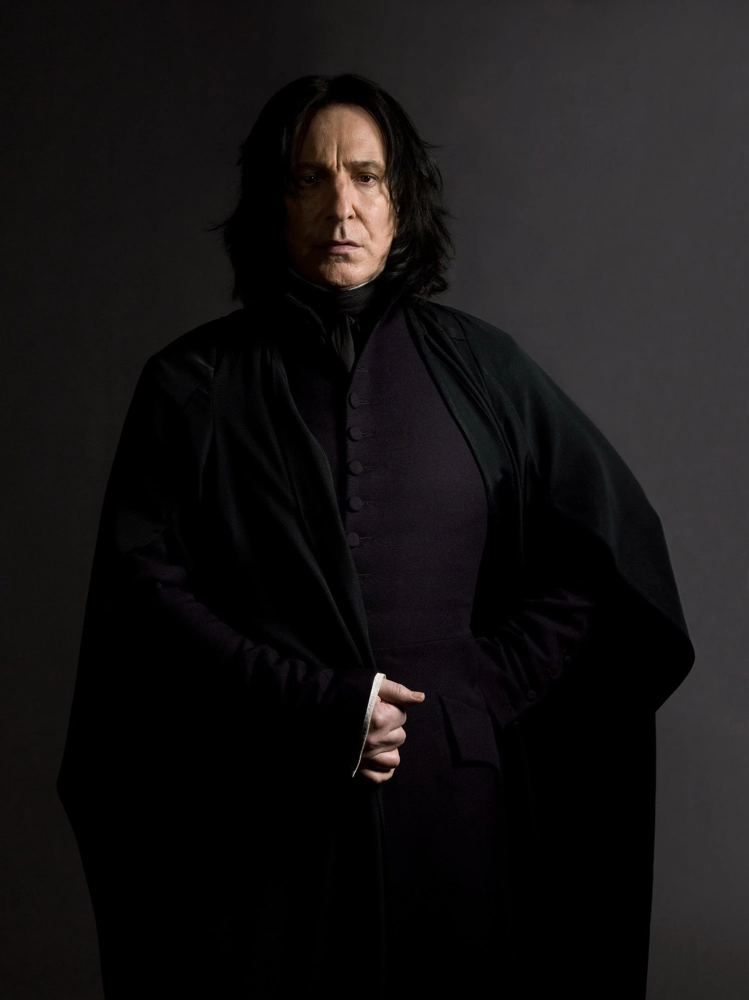
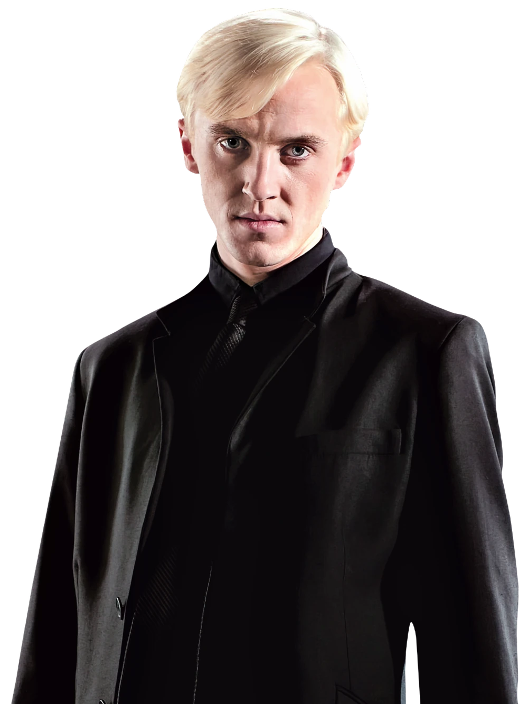
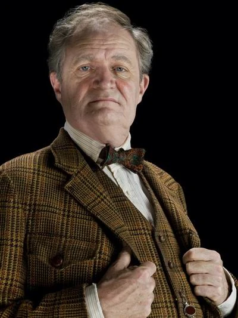

斯莱特林
创办人：萨拉查·斯莱特林
创始人遗物：斯莱特林的挂坠盒
代表动物：蛇
代表色：绿色、银色
象征元素：水
招生标准：血统纯正、有野心
分院帽：也许你会进斯莱特林，也许你在这里交上真诚的朋友，但那些狡诈阴险之辈却会不惜一切手段，去达到他们的目的。
常驻幽灵：血人巴罗
公共休息室：一间位于湖底（黑湖）的半透明休息室，墙由黑色的哥特式大理石砌成，天花板是水晶雕刻的透明半圆，可以看到头顶上粼粼的波光。天花板上用链子栓着泛绿光的灯。室内有一壁炉，带有雕刻精美的壁炉台，旁边有些雕花椅。常常可以透过窗户看见一些巨大的章鱼或奇怪生物。
代表人物：
| 西弗勒斯·斯内普 | 德拉科·马尔福 | 霍拉斯·斯拉格霍恩 |
|  |  |  |